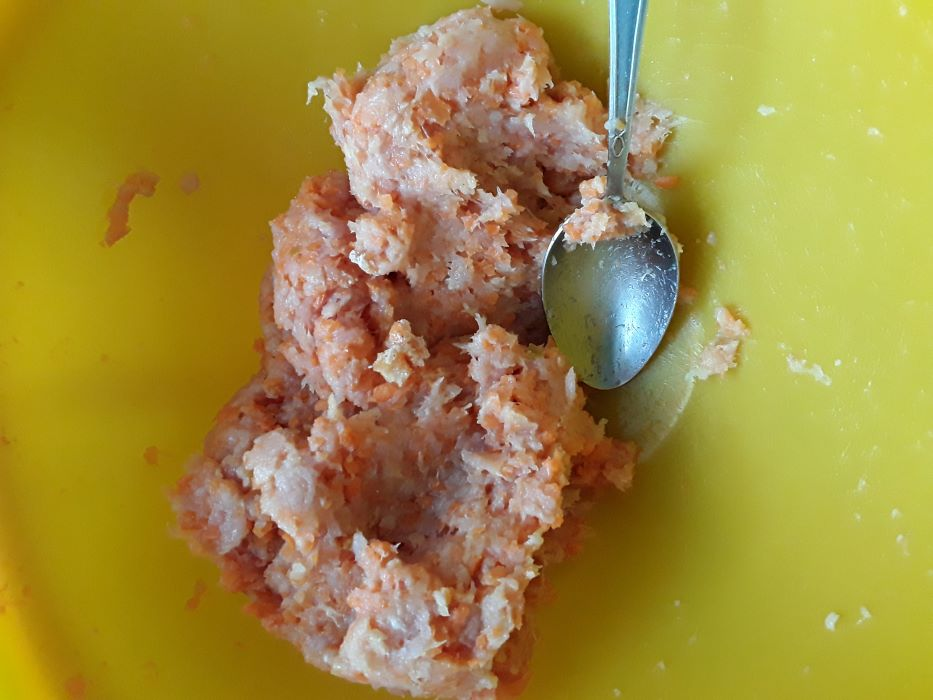
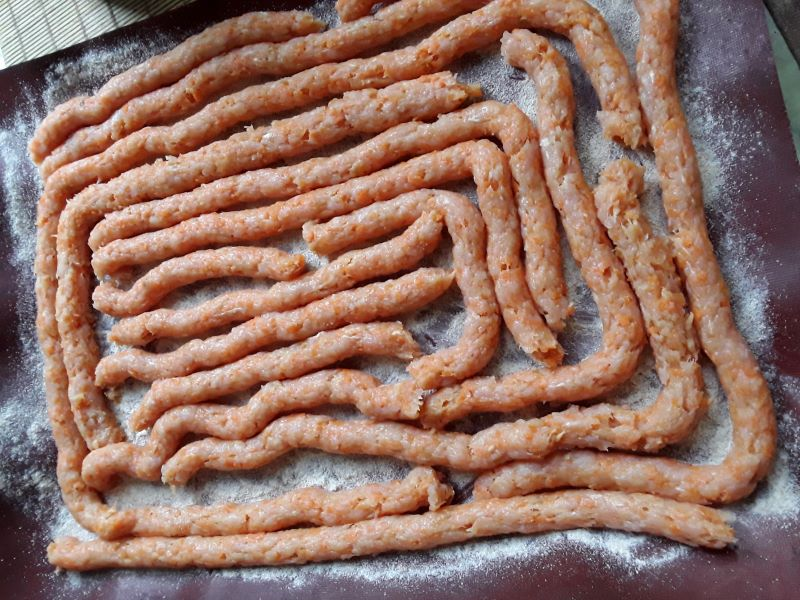
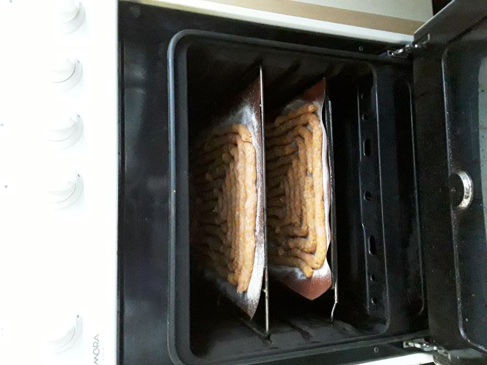

Делаю из фарша индейка + любые овощи. Здесь с морковью и тыквой; овощей больше, чем мяса (это от жадности:D). Если будешь класть кабачок, то надо его отжать хорошо, а то он воду даст. Я больше люблю большие кабачки-переростки, смалываю их вместе с семенами и кожурой, они менее водянистые.
Мясо можно тоже любое использовать. Я пробовала из говяжьего вымени делать, это дешевле гораздо. Но зато нарезать трудно, очень уж оно крошится. В общем, потом на индейку перешла, с ней проще всего.
Потом надо этот фарш выдавить через кондитерский шприц или мешок на противень, чтобы получилось что-то вроде длинных тонких колбасок. Противень предварительно мукой засыпь, а то пристанет всё.
Шприц вот такой использую, металлический. Фарш всё-таки плотнее крема, пластиковый бы мог сломаться быстро. А этот держится.
Только я у одной из желтых насадок срезала носик поближе к основанию, чтобы отверстие больше было; в тонком носике фарш застревает
Если есть силиконовые коврики для выпечки, то их очень удобно использовать, на них пристает меньше.
Потом запихиваешь в духовку и сушишь.
Я ставлю средний огонь, даю нагреться и выключаю. И так несколько раз, только надолго лучше не оставлять включенным, сгореть может легко. Я вначале, пока они там еще сырые, минут 15 огонь держу. Когда подсыхают, еще меньше. Единственное, надо смотреть, конечно, если там какие-то водянистые овощи, то можно и чуть дольше подержать, чтобы вода поиспарялась.
Когда они подсыхают, это видно: цвет меняется, они уменьшаются в объеме и начинают легко отставать от поверхности.
Они уже вяленые, довольно твердые, режутся легко. В общем-то, можно уже на этом и остановиться, просто от них отламывать или отрезать куски. Только их надо в холодильнике хранить, они всё же не сушеные.
Но я больше люблю всё полностью порезать и до сухарей досушить. С сухарями проблем меньше, даже если какой-то из них в кармане две недели проваляется, всё равно не испортится.
Эти я вообще с огнем не оставляю, а делаю так: включаю пустую духовку, противни стоят отдельно где-нибудь на столе или на плите, но не в духовке. Когда хорошо разогрелось, огонь выключаю. Противни помещаю в духовку, когда огонь уже не горит, а то эти кусочки маленькие и уже подсушенные, они вообще быстро сгорают. Так можно подумать: да я только на минуту отойду, курьеру открою, а вернуться уже к углям. На этом этапе вообще обидно сжечь, они ведь уже почти готовы. А так, духовка горячая, они будут подсыхать понемногу, но не сгорят. Тоже несколько раз так сделать (раза три или четыре обычно хватает).